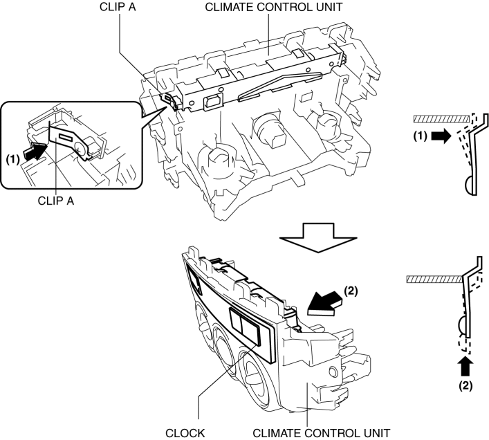
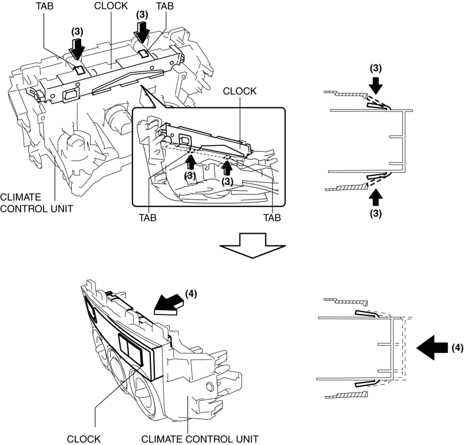
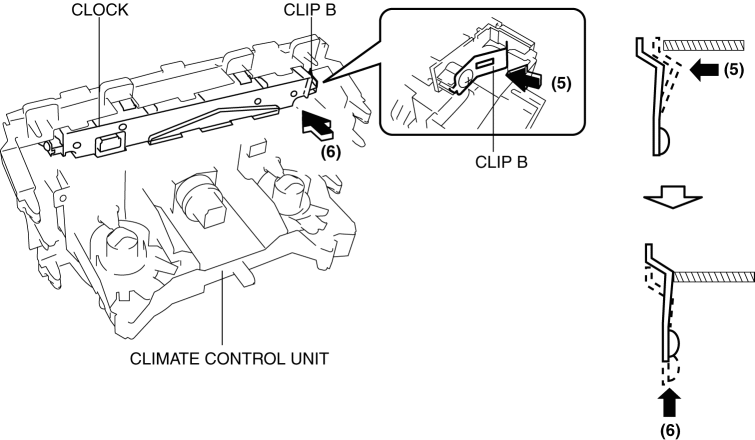

< Previous
Next >
2014 -
Mazda6 -
Body and Accessories
CLOCK REMOVAL/INSTALLATION
1. Disconnect the negative battery cable. (See NEGATIVE BATTERY CABLE DISCONNECTION/CONNECTION [SKYACTIV-G 2.5].)
2. Remove the following parts: a. Shift lever knob (MTX) (See MANUAL TRANSAXLE SHIFT MECHANISM REMOVAL/INSTALLATION [C66M-R].)
b. Front console box (See FRONT CONSOLE BOX REMOVAL/INSTALLATION.)
c. Shift panel (See SHIFT PANEL REMOVAL/INSTALLATION.)
d. Upper panel (See UPPER PANEL REMOVAL/INSTALLATION.)
e. Rear console (See REAR CONSOLE REMOVAL/INSTALLATION.)
f. Side wall (See SIDE WALL REMOVAL/INSTALLATION.)
g. Decoration panel (See DECORATION PANEL REMOVAL/INSTALLATION.)
h. Front console (See FRONT CONSOLE REMOVAL/INSTALLATION.)
i. Glove compartment (See GLOVE COMPARTMENT REMOVAL/INSTALLATION.)
j. Climate control unit (See CLIMATE CONTROL UNIT REMOVAL/INSTALLATION [MANUAL AIR CONDITIONER].)
3. Push out the clock in the direction of the arrow (2) shown in the figure while pressing clip A in the direction of the arrow (1) shown in the figure, and detach clip A and the climate control unit.

4. Push out the clock in the direction of the arrow (4) shown in the figure while pressing the clock tab in the direction of the arrow (3) shown in the figure and remove the clock tab and climate control unit.

5. Push out the clock in the direction of the arrow (6) shown in the figure while pressing clip B in the direction of the arrow (5) shown in the figure, detach the clock tab and climate control unit, and remove the clock from the climate control unit.

6. Install in the reverse order of removal.
< Previous
Next >
© 2012 Mazda North American Operations, U.S.A.